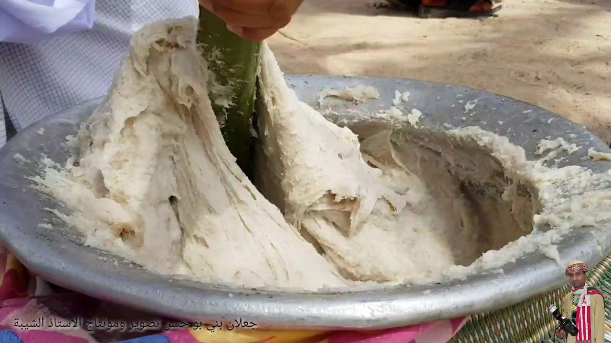

تعد "العرسية" من أشهر الأطباق التقليدية في ولاية جعلان، وتتميز بمذاقها اللذيذ والفريد. يُحضّر هذا الطبق في المناسبات الخاصة مثل الأعراس والاحتفالات العائلية. يتكون المكونات الأساسية للعرسية من الأرز واللحم (غالبًا لحم الضأن أو الدجاج)، ويُضاف إليها مجموعة من التوابل العمانية الشهيرة مثل الكمون والزعفران والهيل لإعطائها طعماً غنياً ومميزاً.
العرسية لا تقتصر على كونها مجرد وجبة طعام، بل هي جزء لا يتجزأ من تقاليد الضيافة العمانية، حيث تُقدم عادة مع اللبن الزبادي أو "اللبن الرائب" لإضافة نكهة لذيذة تميزها.
العرسية، الطبق التقليدي الشهي الذي يزين مائدة جعلان في المناسبات الخاصة.
بالإضافة إلى العرسية، تقدم ولاية جعلان العديد من الأطباق الأخرى التي تُعدّ في المناسبات المختلفة، مثل "المجبوس" و"الشواء العماني"، والتي تشترك في بعض المكونات مثل الأرز والتوابل العمانية الأصلية، ولكن لكل منها نكهته المميزة وطرق تحضير فريدة.